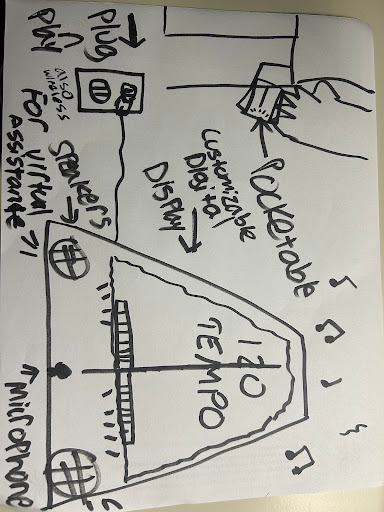
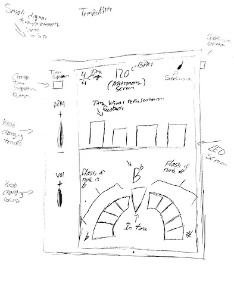

As a former music student, I know practicing can be frustrating, staying in tune, keeping time, articulating well, etc. When working on this project with another classmate, a literature review was conducted of current robots and devices that are directly involved in music. We've found robots that conduct for orchestras, a deep learning system that assesses the players performance, and other systems built for improvement for musicians. I wanted to create something that could help solve such issues making practicing smoother for music students for the best results.
I created a survey for music students to gather data on their current use of their metronome and find any pain points the student might have with their current metronome. I also asked for any additional features the students may deem useful they we may add to our prototype. We needed to know what tools students are curently using. Most studetns use digital metronomes compared to an app. 57% of students uses a digital metronome compared to the 43% that uses an app. We found that most students have trouble changing the tempo of the metronome in the middle of practicing their piece, though 14% of students responded with having no issues, 29% of students responded with having those issues sometimes, and 57% of students had a problem. Each response has helped us come up with design decisions for our prototype.
I wanted to come up with as many solutions as I can to solve issues I have generated many sketches for the TempoMate metronome. A basic looking digital metronome, a reimagined digital metronome that implemented some to all considered features, a digital metronome with an arm for visual purposes, an app, etc. Big, small, oddly shaped, practical, or impractical, all was throught out. Many of these sketches we thought could solve so many issue and many were thought to cause new issues for music students but everything was drawn and considered no matter how obsurd the sketch was.
With all the sketches created, what piece of what sketch can we use for the TempoMate prototype that can solve the problem with timing control, punctuating feedback of the device, low-disctractions, and other problems the students have. We created a paper prototype of a mix of a digital and mechanical metronome where the student can move the arm to control the tempo with a digital screen behind the arm showcasing the tempo. The arm was to be visual feedback for the users and the arm was set to click giving the student audible feedback. Our other paper prototype was a fully digital that had knobs to change the volume and tempo and other buttons to be able to change the time signature. The screen is split for the metronome and tuning features. Both paper prototypes had been evaluated by Michigan State music students.


I have learned a lot through this experience. Unfortunetaly, this project had to come to an end due to the course not having enough resources to move forward with this project. This project had enhanced my interviewing, creative/critical thinking, data collection and analysis, and prototyping skills. Working on this project had only made me realize more about how important the users are. Without experience from the students, a terrible product could have been released. Something I wish I had done differently was designing for everyone. When reviewing the survey, I only made design decisions based on the majority. Later on I realized my mistake and noticed that I had left a margin of potential users in the dark because I wasn't thinking about them. For future projects, if I truly want an accessible product, I need to account for "the minority" of users.